Loading experience — recommendation and handoff
The final HighLevel standard for every wait in the product: 6 principles, 1 time ladder, and 12 components. It starts from what staging already does well and fixes the 9 places where it breaks. Every demo on this page is live and uses the exact spec values.
Decision summary
Staging already paints a shell skeleton and talks to users in plain words. What's missing is the ending: loaders that never stop, too many loader looks, and 2 progress bars. This recommendation makes every wait follow the same 6 rules.
The host document paints the shell and a route-shaped skeleton before any module JavaScript loads.
The skeleton hands off to content with a 200 ms cross-fade. Never skeleton → spinner.
Nothing under 300 ms → indicator → words at 2 s → "Still working on it" at 8 s → failure at 30 s.
A failure state in place, in plain copy, with Try again and Go back.
Refresh, filter, sort, and paginate keep the current content. Loaded content is never re-skeletoned.
Every loader reads 1 color token, neutral skeletons, no logos, plain-verb copy. Ready for agency colors later.
What we're asking you to approve
- The 6 principles and the time ladder (300 ms, 400 ms, 2 s, 8 s, 30 s) as the HighRise loading standard for every team.
- 1 skeleton and 1 spinner. Retire the 5 skeleton animations and 4 spinners on staging.
- A mandatory 30 s exit. Every async region is wrapped in
RegionLoaderand ends in content or a failure state. - 1 progress line, under the header. Remove the full-window boot bar and its staged fake progress.
What changes for users
- Fast pages show no loader at all. Slower pages show 1 calm skeleton, not a chain of loaders.
- The breadcrumb and nav switch the moment they click, so they always know where they're going.
- A page that can't load says so within 30 s and offers Try again and Go back. No endless spinners.
- Filtering a table keeps the rows on screen instead of blanking the page.
- Imports and exports run in the background. They can keep working and get notified when it's done.
- Every loader has the same look and color in every module, and is ready for agency colors later.
The problem: loading in the HighLevel app today
Customers see a top progress bar, several spinner styles, skeletons, and product-specific loaders, with no shared rules for timing, ownership, or failure.
Blank screen, then a bar
Up to 5 s of empty canvas before any loader. The top bar runs over nothing, because the page's loader lives inside lazy-loaded code.

4+ spinner styles
Blue, green, material, and dot variants, each team's own. No shared size, speed, color, or timing.

The washing machine
Shell, module, and widget each bring a loader, so one wait shows 3 in a row. It feels slower than it is.

Loaders that never end
No timeout and no failure state. When a request hangs, the shimmer runs forever with no message and no way out.
The system
12 components, 1 animation, 1 color source. Every demo below is live and follows the spec values.
1 · ShellSkeleton ShellSkeleton
Inline HTML and CSS in the host document. It paints rail, sidebar, top bar, and a route-shaped canvas before any module JavaScript. Variants: three-pane, table, kanban, calendar, cards, form, builder, plain.
RegionLoader), or replacing content that's already loaded.2 · RouteProgressLine RouteProgressLine
The single progress line: 2 px, under the header, across the canvas, in --primary-600. Appears after 300 ms, trickles toward 90%, completes in 200 ms, then fades in 200 ms.
3 · StatusWords StatusWords
Breadcrumb-slot status: 13/18 px Inter, #475467, 12 px spinner on the left. One always-present role="status" live region. States: loading, still, offline, cached, failed with retry.
4 · Skeleton primitives SkLine SkBlock SkAvatar SkTableRows SkCard
1 animation everywhere: arrival (fade + 4 px rise, 400 ms, 30 ms stagger, max 8 steps), then a glow sweep (1.6 s, 600 ms pause). Every skeleton on the page shares one phase.
5 · Spinner Spinner
1 ring, arc 25%, 0.8 s linear. Stroke 2 px at 16 and 20, 2.5 px at 24, 3 px at 32. Color currentColor (default --primary-600), track at 15%.
6 · ButtonLoading ButtonLoading
Click it. Idle → pending (blocked at once, spinner after 300 ms, width locked, aria-disabled, focus kept) → success (check for 1.5 s) or error (inline message below, no shake).
JobTray.Variant to test: label next to the spinner
Off: the spinner replaces the label and the width stays locked. On: spinner + “Saving…”, and the button grows once to fit.
7 · RefreshState RefreshState
Stale content stays at full opacity with a 2 px edge line on the region, "Updated 3:04 PM", and Refresh ↔ Cancel.
Variants to test: table refresh and filter
Rows stay is the default. Use the controls on each example to try skeleton rows and turn the table's progress bar on or off.
8 · ProgressBar ProgressBar
Determinate only. Radius 999, track #f2f4f7, fill --primary-600, width transition 300 ms ease-out. Labeled with real counts.
9 · Background jobs panel JobTray
Shell-owned, bottom right, survives route changes. “You can keep working. We'll notify you when it's done.” sits in the header. The header collapses like an accordion; close is disabled while a job runs. Each file shows name, size, counts, a bar with percentage, and Cancel; a check when done; Retry when it fails. No start time. Toasts appear top center.
Variants to test: import
Each file is a card: name, size and counts, a bar with an optional percentage, a check when it's done, and a red card with Retry when it fails. Try 1 or multiple files, where Cancel sits, percentage on or off, a failed file, Retry below the text or top right, the “You can keep working” line in or below the header, a wider card that keeps that line on 1 row, and end actions (off by default). With multiple files, each file can be paused or canceled.
10 · AIStatus AIStatus
Thinking → working (real steps) → streaming → done, stopped, or failed. Elapsed timer after 2 s, estimate after 20 s, "You can leave" after 60 s, timeout at 120 s. Stop sits in Send's slot.
11 · FailureState FailureState
Centered in the region: 16 px semibold title #101828, 13 px body #475467, 32 px buttons (Try again primary, Go back secondary). Partial variant reports what loaded.
12 · RegionLoader RegionLoader / HLLoadable
The wrapper every async region uses. It owns grace, minimum visible time, cross-fade, still-working, timeout, and failure, so module teams never hand-roll timing. Props and state machine are in Specs.
ButtonLoading) or long jobs (JobTray).What the user sees over time
A route change from Contacts to Opportunities. Pick when the response arrives, then drag the scrubber or press Play. The axis is compressed (square-root scale) so the first second is readable. 0 s is the click.
Markers: 300 ms grace · 700 ms earliest swap after the 400 ms minimum · 2 s words · 8 s still working · 30 s failure. Button: spinner at 300 ms, becomes a job at 5 s. AI: timer at 2 s, estimate at 20 s; "You can leave" (60 s) and timeout (120 s) are past the end of this axis.
Context matrix
Which component to use, where. Each row links to its live demo.
| Context | Use | Notes | Demo |
|---|---|---|---|
| App boot | ShellSkeleton + StatusWords ("Loading your account") | No full-window boot bar. Stall at 10 s via CSS. | ShellSkeleton |
| Route change | Breadcrumb + nav update instantly · RouteProgressLine after 300 ms · old page kept and dims after 300 ms (inert) · destination module not mounted within 300 ms → destination ShellSkeleton | Words at 2 s, still at 8 s, failure at 30 s. | Timeline |
| Section / card / widget | RegionLoader with a layout-matched skeleton; independent per card; partial failure per card | Charts: SkBlock with axis lines, not a spinner. | Skeleton |
| Table first load | Real header + SkTableRows (8–12 rows, fading) | Checkboxes real. | SkTableRows |
| Table refresh / filter / sort / page | RefreshState (stale rows at 100% opacity, 2 px edge line, Refresh → Cancel after 2 s) | Default: don't re-skeleton. Variants under test: skeleton new rows, skeleton all rows on filter, edge line on/off. | RefreshState |
| Inline / field | Spinner 16 in the trailing slot | Select options: skeleton rows inside the menu. | Spinner |
| Button / CTA | ButtonLoading | Over 5 s → becomes a job. | ButtonLoading |
| Modal / drawer | Frame opens instantly at final size, header + close real; body skeleton | Never skeleton the frame. | Skeleton |
| Background job | JobTray (note in the header, collapsible, close disabled while running) + top-center toast + notification on finish + result summary (end actions optional, under test) | Never "Don't close this window". | JobTray |
| AI generation | AIStatus; output-shaped skeleton in place; Stop | Plain verbs. | AIStatus |
| Account switch | Name + avatar instant; nav skeleton; content skeleton (never the previous account's data); words "Switching to {name}" | ShellSkeleton | |
| Offline | StatusWords "You're offline. We'll retry when you're back."; keep content | StatusWords | |
| Failure | FailureState in place; Try again only if retryable; 1 message (no duplicate toast) | FailureState |
What the Switchyard team built on staging
Audited live on switchyard-v4 staging on Oct 12, 2026, with a throttled network and API calls delayed on purpose. Timings come from the shipped bundle. Staging was captured in the Dutch locale to confirm that status words localize. Staging already did the hardest part: the host document paints a route-aware shell skeleton before any module loads, and the breadcrumb slot already talks in plain, escalating words. The recommendation keeps all of that.
S1Shell skeleton in the host document, with route-aware shapes: three-pane, calendar, kanban, cards, table, plain.S1Staggered arrival of skeleton bars.S2 S5 S7Status words in the breadcrumb slot, with escalation copy and localization.S5Old page stays on screen during a route change.S4Boot stall message with a way to reload.S12Real-chrome composer skeleton: real controls, just inert.S13Workspace name changes instantly on account switch.
Evidence
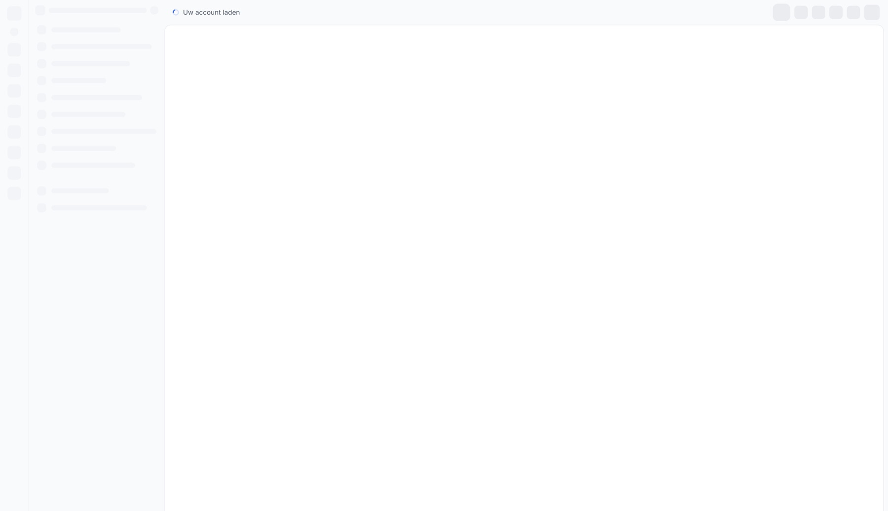
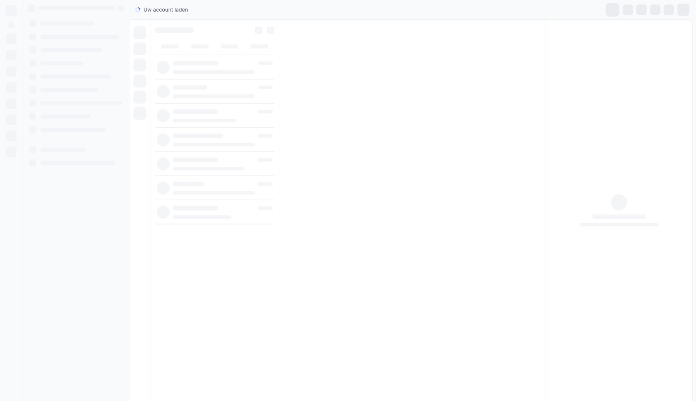
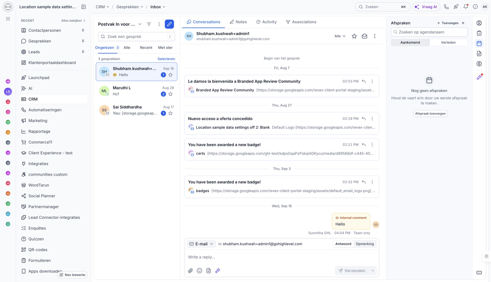
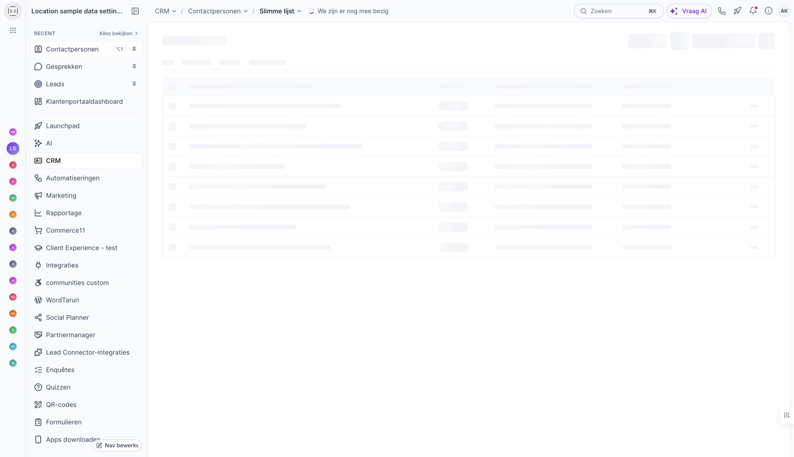
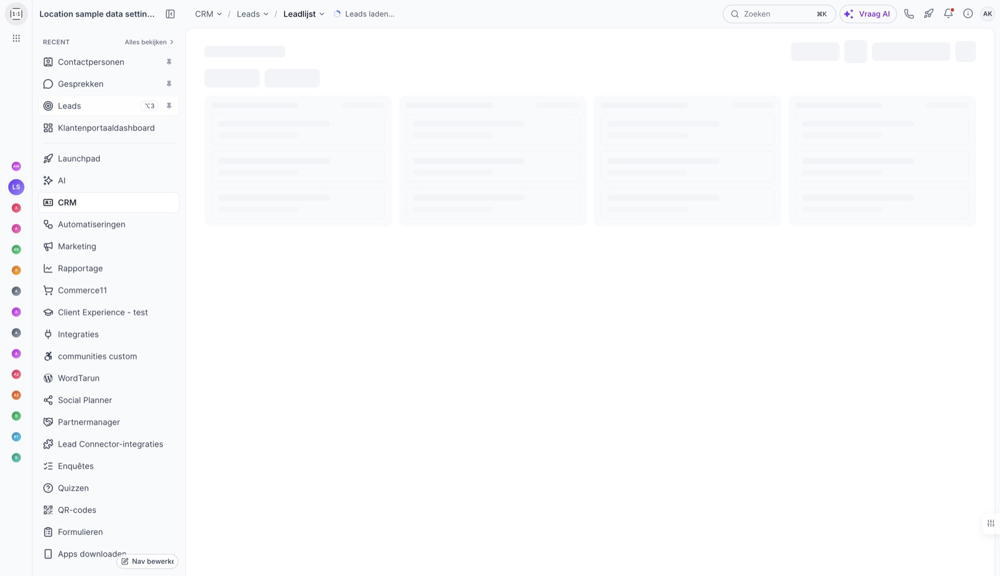
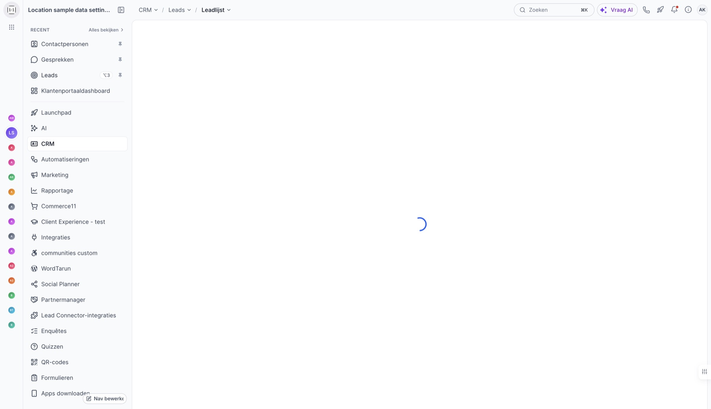
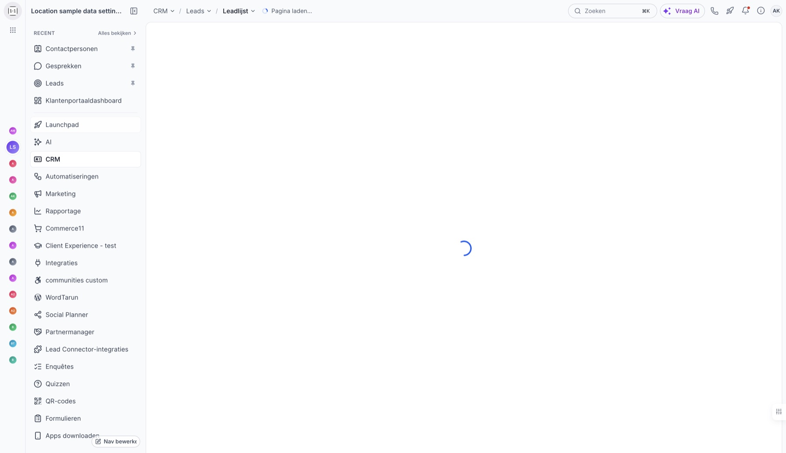
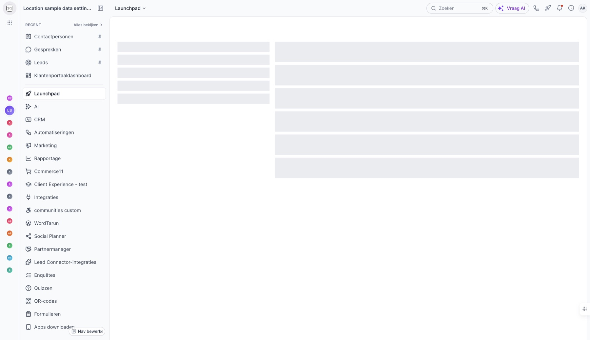
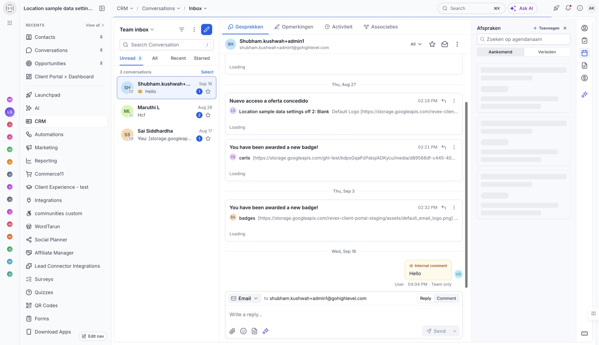
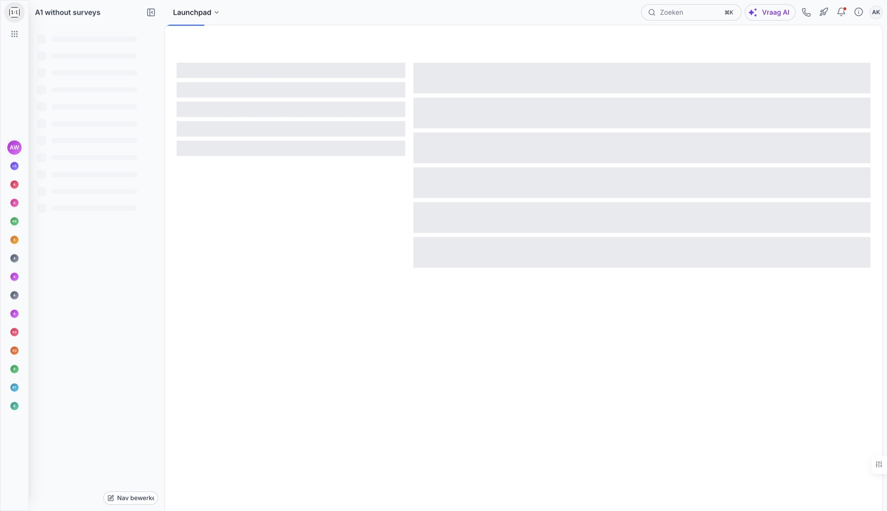
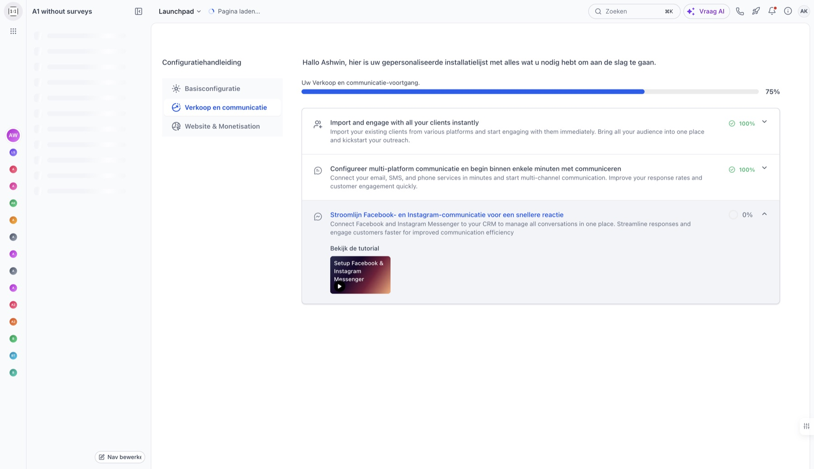
Proposed fixes: the 7 problems, Today vs Proposed
Each fix runs the same real scenario in both systems, side by side. Change the network or speed under a pair to replay both; click a frame to open it full size with every prototype control.
SkLine rows in the card body, same animation as everything else.--primary-600. It's HighLevel blue today; when agency brand colors are supported, loaders follow with no rework.Specs for developers
Everything a frontend engineer needs to build it. Values match the time ladder and visual tokens exactly.
Tokens
:root {
/* Time ladder */
--ld-grace: 300ms; /* no indicator before this; also the route line delay */
--ld-min-visible: 400ms; /* once shown, keep at least this long */
--ld-fade-in: 150ms;
--ld-crossfade: 200ms; /* skeleton → content */
--ld-words: 2000ms; /* "Loading {page}…" appears */
--ld-still: 8000ms; /* "Still working on it" */
--ld-cancel: 2000ms; /* Cancel appears on long fetches; Refresh becomes Cancel */
--ld-timeout: 30000ms; /* → FailureState */
--ld-boot-stall: 10000ms; /* boot only: "Still connecting…" + Reload, via animation-delay */
--ld-btn-success: 1500ms; /* button success hold */
--ld-job-threshold: 10000ms;/* expected longer than this → JobTray */
--ld-ai-timer: 2000ms; /* AI: elapsed timer */
--ld-ai-estimate: 20000ms; /* AI: estimate */
--ld-ai-leave: 60000ms; /* AI: "You can leave" */
--ld-ai-timeout: 120000ms; /* AI: timeout */
/* Skeleton */
--ld-sk: #eaecf0; /* on white */
--ld-sk-on-gray: #e4e7ec; /* on page gray #f9fafb */
--ld-sk-radius-text: 4px; /* text bars, height 10–12px */
--ld-sk-radius-block: 6px;
--ld-sk-radius-round: 999px; /* avatars, pills */
--ld-sk-glow: rgba(255, 255, 255, .6);
--ld-sk-arrive: 400ms;
--ld-sk-ease: cubic-bezier(.16, 1, .3, 1);
--ld-sk-shift: 4px;
--ld-sk-stagger: 30ms; /* per row, max 8 steps */
--ld-sk-sweep: 1600ms; /* ease-in-out */
--ld-sk-pause: 600ms;
/* Spinner */
--ld-spin-speed: 800ms; /* linear */
--ld-spin-track-opacity: .15;
--ld-spin-arc: 25%; /* of circumference */
/* Progress line and bar */
--ld-line-height: 2px;
--ld-line-max: 90%; /* trickle ceiling, never a number */
--ld-line-complete: 200ms;
--ld-line-fade: 200ms;
--ld-bar-height: 4px; /* inline / tray; 6px standalone */
--ld-bar-track: #f2f4f7;
--ld-bar-transition: 300ms ease-out;
/* Words and failure */
--ld-words-color: #475467; /* 13px / 18px Inter, 12px spinner */
--ld-fail-title: #101828; /* 16px semibold */
--ld-fail-body: #475467; /* 13px */
--ld-fail-button-height: 32px;
/* Color */
--ld-accent: var(--primary-600); /* HighLevel blue today; agency color once supported */
}Skeleton CSS (the only skeleton animation)
.hl-sk {
position: relative;
overflow: hidden;
background: var(--ld-sk);
border-radius: var(--ld-sk-radius-text);
}
.hl-sk--block { border-radius: var(--ld-sk-radius-block); }
.hl-sk--round { border-radius: var(--ld-sk-radius-round); }
.hl-on-gray .hl-sk { background: var(--ld-sk-on-gray); }
/* Glow sweep: 1.6 s ease-in-out travel + 600 ms pause = 2.2 s cycle */
.hl-sk::after {
content: "";
position: absolute;
inset: 0;
transform: translateX(-100%);
background: linear-gradient(90deg, transparent, var(--ld-sk-glow), transparent);
animation: hl-sk-glow calc(var(--ld-sk-sweep) + var(--ld-sk-pause)) infinite;
}
@keyframes hl-sk-glow {
0% { transform: translateX(-100%); animation-timing-function: ease-in-out; }
72.73% { transform: translateX(100%); } /* 1,600 / 2,200 */
100% { transform: translateX(100%); } /* pause */
}
/* Arrival: rows set --i (0–7) */
.hl-sk-arrive > * {
animation: hl-sk-arrive var(--ld-sk-arrive) var(--ld-sk-ease) both;
animation-delay: calc(min(var(--i, 0), 7) * var(--ld-sk-stagger));
}
@keyframes hl-sk-arrive {
from { opacity: 0; transform: translateY(var(--ld-sk-shift)); }
}
/* Dense tables: rows fade 1 → .2 over the visible rows */
.hl-sk-rows > :nth-child(1) { opacity: 1; }
/* … step down evenly … */
.hl-sk-rows > :nth-child(n+8) { opacity: .2; }
/* Reduced motion: no arrival translate, no glow. Spinners keep rotating. */
@media (prefers-reduced-motion: reduce) {
.hl-sk::after { display: none; }
.hl-sk-arrive > * { animation-name: hl-sk-fade; }
}
@keyframes hl-sk-fade { from { opacity: 0; } }Spinner markup
One SVG, 4 sizes. r = (size − stroke) / 2. pathLength="100" makes the 25% arc size-independent.
| Size | Stroke | Radius | Where |
|---|---|---|---|
| 16 px | 2 px | 7 | Inline fields, buttons, ledger rows |
| 20 px | 2 px | 9 | Small regions, menu footers |
| 24 px | 2.5 px | 10.75 | Panels with unknown shape |
| 32 px | 3 px | 14.5 | Largest allowed; never a page loader |
Single-phase sync
Every skeleton glow on the page moves together, so a module that takes over the shell skeleton is invisible to the user. The shell's inline skeleton paints in one frame, so it already shares a phase. Modules call this on mount (HighRise does it inside RegionLoader):
// Pin every skeleton glow to the document timeline origin.
// Same start time → same phase, no matter when the node mounted.
export function syncSkeletonPhase(root = document) {
for (const anim of root.getAnimations({ subtree: true })) {
if (anim.animationName === 'hl-sk-glow' && anim.startTime !== 0) {
anim.startTime = 0;
}
}
}
// RegionLoader: after the skeleton renders
requestAnimationFrame(() => syncSkeletonPhase(regionEl));RegionLoader state machine
RegionLoader / HLLoadable props
| Prop | Type | Default | Behavior |
|---|---|---|---|
shape | 'three-pane' | 'table' | 'kanban' | 'calendar' | 'cards' | 'form' | 'builder' | 'plain' or a skeleton slot | 'plain' | Layout-matched skeleton built from Sk* primitives. Must match the shell's shape for page bodies. |
timeout | number (ms) | 30000 | Moves to failed when reached. Never disabled. |
onRetry | () => void | — | Called by Try again. Returns the loader to grace. |
canRetry | boolean | true | Hides Try again when the request isn't retryable. Go back stays. |
stale | boolean | false | Keep-content mode: renders RefreshState over existing content instead of a skeleton. |
label | string | — | Human name for words and announcements: "Loading {label}", "{label} loaded", "Couldn't load {label}". |
Owns internally: grace (300 ms), minimum visible (400 ms), fade-in (150 ms), cross-fade (200 ms), still-working (8 s), timeout, failure, aria-busy, and phase sync.
ButtonLoading
| State | Visual | Behavior |
|---|---|---|
idle | Label | — |
pending | Spinner 16 replaces the label after 300 ms; width locked | Clicks blocked at once. aria-disabled="true", focus stays on the button. Over 5 s → hand off to JobTray. |
success | Check + past-tense label ("Saved") for 1.5 s | Returns to idle. |
error | Label returns; inline error text below the button | No shake. The message is announced via role="alert". |
JobTray events
The background jobs panel (JobTray) lives in the shell so it survives route changes. Modules talk to it through events, never by rendering their own tray.
| Event | Payload | Tray behavior |
|---|---|---|
job:start | { id, name, total?, startedAt } | Adds a row, opens the tray, shows the toast "You can keep working. We'll notify you when it's done." |
job:progress | { id, done, total } | Updates bar and "1,240 of 3,100". aria-valuenow throttled to once per second. |
job:finish | { id, summary, resultUrl?, errorFileUrl?, undo? } | Row shows result ("3,050 added · 50 skipped") with View results, Download error file, and Undo. Sends a notification. |
job:fail | { id, message, canRetry } | Row shows the plain message and Try again if retryable. |
job:cancel | { id } | Sent by the tray's Cancel. The module stops the work and confirms with job:finish or job:fail. |
Route-change sequence
- 0 msBreadcrumb and nav selection switch to the destination instantly. The canvas gets
aria-busy="true". - 0–300 msNothing else changes. If the destination renders within 300 ms, no loader is ever shown.
- 300 msRouteProgressLine appears under the header and trickles toward 90%.
- 300 msThe old page dims and becomes inert. If the old content is itself a loader or an error, it's replaced by the destination skeleton immediately.
- 300 msIf the destination module isn't mounted, the shell swaps in the destination ShellSkeleton (fade-in 150 ms). When the module mounts, it takes over the same skeleton in the same phase.
- 2 sStatusWords: "Loading {page}…" in the breadcrumb slot.
- 8 sStatusWords: "Still working on it".
- 30 sFailureState in the canvas: "Couldn't load {page}" with Try again and Go back. Focus moves to the failure title.
- DoneContent cross-fades in over 200 ms (no earlier than 400 ms after the skeleton appeared). The line completes in 200 ms and fades in 200 ms. Screen readers hear "{page} loaded".
Copy deck
en-US, sentence case. Localize every string; keep {page} as the user-facing page name from the nav.
| State | String | Notes |
|---|---|---|
| Boot | Loading your account | "Loading your agency" in agency view. |
| Boot stall (10 s) | Still connecting… Reload the page if this continues. | Revealed by CSS animation-delay, so it works before any JavaScript. |
| Route, 2 s | Loading {page}… | "Loading page…" only when the page name is unknown. |
| Still, 8 s | Still working on it | Variant: "Still working on it · Your connection may be slow" when the connection is slow. |
| Account switch | Switching to {name} | Name and avatar update instantly. |
| Cached | Showing your last {thing} · Checking for new ones | e.g. "Showing your last conversations". |
| Offline | You're offline. We'll retry when you're back. | Keep content on screen. |
| Failure | Couldn't load {page} Check your connection and try again. [Try again] [Go back] | Try again only if retryable. 1 message, no toast echo. |
| Partial failure | Some of this page didn't load 3 of 4 widgets loaded. [Try again] | Failed widgets show their own FailureState in place. |
| Job running | Importing contacts · 1,240 of 3,100 You can keep working. We'll notify you when it's done. | Counts, not time units. |
| Job finished | Import finished · 3,050 added · 50 skipped | Result row in the tray and in the notification. Action buttons (Download error file, Undo import) are a variant under test. |
| Save | Saving… → Saved | Past tense on success. |
| AI | Reading 24 conversations · Writing 3 replies · Thought for 6s · Stopped [Continue] [Regenerate] | Real steps only. |
| Screen reader | Loading Contacts → Contacts loaded | 2 announcements per page change: 1 when it starts, 1 when it's ready. No repeats. |
Never say
White-label and accessibility rules
White-label
- Spinners, the progress line, and progress bars use
--primary-600orcurrentColor. Nothing else. - Skeletons are always neutral:
#eaecf0on white,#e4e7econ page gray. - Agency brand colors aren't supported yet. Today
--primary-600is HighLevel blue; when agency colors ship, every loader follows automatically. - Never hard-code a loader color.
- No logos, marks, sparkles, or mascots as loaders. No vendor names or support emails in loading copy.
- Plain verbs only. No whimsical copy an agency can't stand behind.
Accessibility
aria-busy="true"on every loading region.- One always-present
role="status"live region (StatusWords) announces "Loading Contacts", "Contacts loaded", and failures. - Progress bars use
role="progressbar"with a label andaria-valuenow, throttled to once per second. - Buttons keep focus while pending, using
aria-disabled, notdisabled. - Focus moves to the failure title when the user started the action.
- Reduced motion: no arrival translate, no glow. Spinners keep rotating, because a frozen spinner reads as a hang.
- A screen reader announces each page change twice, no more: "Loading Contacts" when it starts and "Contacts loaded" when it's ready.
Dos and don'ts
10 pairs for the guideline page. Each one is live or taken from staging.
Once shown, a loader stays at least 400 ms.
Couldn't load Opportunities
Check your connection and try again.
Acceptance checks
Open decisions for review
Staging shows a 2 px bar across the top of the window on boot, with staged fake progress, and a second line under the header on route changes. The shell skeleton and "Loading your account" already carry the boot.
30 s matches the cap already in the shipped shell, so no user waits longer than they do today; they just get an exit. Heavy accounts may need more for a few routes.
timeout override with a review, and calibrate against P95 load times after launch.Some loaders are shared by every page; others are specific to one product's screens.
Boot stalls at 10 s ("Still connecting…" with Reload, revealed by CSS before any JavaScript). Everything else says "Still working on it" at 8 s.
Agency brand colors aren't supported yet. When they are, any loader with a hard-coded color would still show HighLevel blue to an agency's clients.